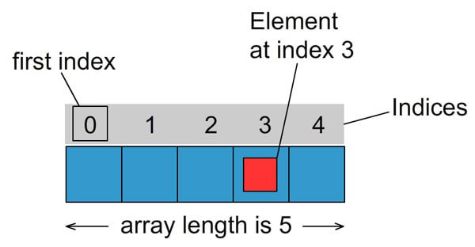
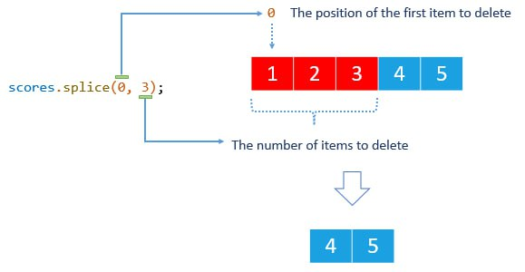
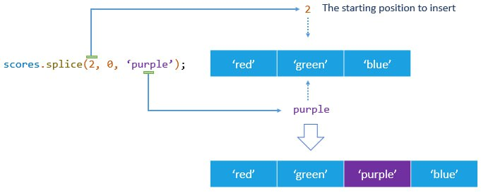
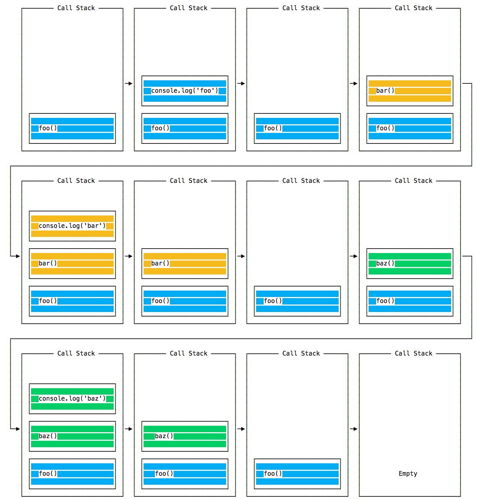

Массивы
Массив - структура данных для хранения и манипулирования
коллекций индексированых значений. Используется для храннения
упорядоченых коллекций данных, например списка курортов, товаров,
клиентов в гостиннице и т.д
Создание
Массив объявляется и берется в квадратные скобки [] - литералом
массива. Внутри скобок каждый элемент массива разделяется запятой
const clients = ["Vasya", "Ann", "Polya"];
Доступ к элементам
Для доступа к значению элемента массива используется синтаксис [] -
массив[индекс 0...]. Между именем и переменной, хранящей массив, и []
не должно быть пробела.
const clients = ['Vasya', 'Ann', 'Polya'];
console.log(clients[0], clients[2]);
console.log(clients[1]);
console.log(clients[2]);
Индексация частей массива начинается с 0

Переопределение
В отличии от строк элементы массива можно изменять, обратившись к ним
по индексу и присвоить другое значение
const clients = ["Vasya", "Ann", "Polya"];
clients[0] = "Petya";
clients[1] = "Vasya"
console.log(clients);// ["Petya", "Vasya", "Polya"]
Длинна массива
Длина массива, т.е количество его элементов, сохраняется в свойстве
length. Это динамическая величина, которая меняется автоматически при
добавлении или удалении элементов
const clients = ["Vasya", "Ann", "Polya"];
console.log(clients.length);//3
Индекс последнего элемента
Чаще всего мы заранее не знаем какова будет длинна массива в коде. Для
того чтобы получить значение последнего элемента, применяется след
подход - длинна массива всегда на еденицу больше, чем индекс
последнего элемента. Используя формулу длинна_массива - 1, можно
получить значение последнего элемента массива произвольной длинны
const clients = ['Vasya', 'Ann', 'Polya'];
const lastElement = clients.length - 1;
console.log(lastElement);//2
console.log(clients[lastElement]);//Polya
Итерация по массиву
Цикл for - можно использовать для итерации по массиву, т.е перебор его по элементно
const clients = ['Vasya', 'Ann', 'Polya'];
for (let i = 0; i < clients.length; i += 1) {
console.log(clients[i]);
}
Для доступа к элементам используется синтаксис квадратных скобок массив[индекс], где индекс это значение счетчика цикла с 0 и до последнего индекса массива, т.е меньшее но не равное его длинне
Цикл for...of
Конструкция for..of обявляет цикл перебирающий итерабельные объекты,
например массив и строки. Тело цикла будет производится для значения
каждого элемента. Это хорошая замена цикла for если не требуется
доступ к счетчику итерации
for (const variable of iterable) {
//тело цикла
}
- variable - переменная которая сохраняет значение элемента на каждой итерации.
- iterable - коллекция содержащая итерабельные (что можно посчитать) элементы, например массив
const clients = ['Vasya', 'Ann', 'Polya'];
for (client of clients) {
console.log(client);
}
const string = "JS";
for (const character of string) {
console.log(character);
}
Операторы break и continue
Будем искать имя клиента в массиве имен, если нашли - прерывается
цикл, поскольку нет смысла искать дальше, имена у нас уникальные
const clients = ['Vasya', 'Ann', 'Polya'];
const clietsNameFind = "Ann";
let message;
for (client of clients) {
//На каждой итерации будет проверять совпадает ли элемент массива с
именем клиента, если совпадает, запишем в message
//Про успех и работу break чтобы дальше не искать
if (client === clietsNameFind) {
message = 'Client found';
break;
}
//Если они не совпадают записываем message об отсутствии имени
message = "Client not found";
}
console.log(message);
Можно сначала задать message значение неудачи поиска а в цикле перезаписать его на упех, если нашли имя. Но break все равно нам понадобится, поскольку если у нас массив из 1000 клиентов, а нужный нам находится на 2й позиции, то нет никакого смысла перебирать оставшиеся элементы
const clients = ['Vasya', 'Ann', 'Polya'];
const clietsNameFind = 'Ann';
let message = "Client not found";
for (const client of clients) {
if (client === clietsNameFind) {
message = "Client found";
break;
}
//Если не совпадает, то на этой итерации ничего не делается
}
console.log(message);
Используем цикл для вывода чисел только больше определенного значения
const numbers = [1, 3, 14, 18, 4, 7, 29, 6, 34];
const threshold = 15;
//Для чисел меньше порогового значения срабатывает continue.
Выполнение тела прекращается и управление
передается на след
итерацию
for (let i = 0; i < numbers.length; i += 1){
if (numbers[i] < threshold) {
continue;
}
console.log(`Число больше ${threshold} : ${numbers[i]}`);
}
Присвоение по ссылке и значению
Фундаментальным отличаем сложных типов от примитивов является то как
они хранятся и копируются. Примитивы: строки, числа, були, null,
underfind, при присвоении полностью копируется по значению (by value)
Со сложными типами все по другому. В переменной, котрой присвоен
массив или объект сохраняется не само значение, а адрес его места и
памяти, иными словами - ссылка (указатель) на него и они передаются по
ссылке (by reference)
Представим переменную в виде листа бумаги. Ее значени мы представим
как запись на этом листе

Если мы захотим сообщить содержание этой записи пользователю, то можем это сделать след образом - сделать физические копии и вручить каждому, т.е сделать много независимых копий (присвоение по значению)

Или положить лист в закрытой комнате и дать ключ к этой комнате, т.е один экземпляр с общим доступом (присвоение по ссылке)

Теперь изменим данные на листе бумаги - значение переменной. Очевидно что посетители всегда будут видеть изменения, которые мы вносим, поскольку меняется оригинал и иони имеют к нему доступ. И так же очевидно что владельцы бумажных копий не заметят перемен, глядя на свои копии.
При передачи по значению переменной выделяется новая ячейка памяти и в
нее копируются данные. Аналогия со многими копиями бумажного листа
имеет реальное воплощение - отдельный лист для каждой копии.
При передаче по ссылке, вместо создания нового объекта переменной
присваивается ссылка (указатель) на уже существующий объект, т.е на
его место в памяти. Таким образом несколько переменных могут указать
на один и тот же объект, по аналогии с закрытой комнатой, они имеют
ключ доступа к оригиналу листа
Все типичные типы присваиваются по значению, другими словами создается
копия
let a = 5;
//Присвоение по значению в памяти будет создана еще 1 ячейка, в
которую будет скопировано значение 5
let b = a;
console.log(a);//5
console.log(b);//5
//Изменим значение a
a = 10;
console.log(a);//10
//Значение b не изменилось поскольку это отдельная копия
console.log(b);//5
Сложные типы - объекты, массивы, функции присваиваются по ссылке, т.е переменная получает ссылку на уже существующий объект
const a = ['Ann'];
//Поскольку а это массив в b записывается ссылка на уже существующий
массив в памяти. Теперь a и b
указывают на один и тот же
массив
const b = a;
console.log(a); //["Ann"]
console.log(b); //["Ann"]
//Изменим массив - добавим еще 1 элемент, используя указатель из а
a.push('Vasya');
console.log(a); //[ 'Ann', 'Vasya' ]
//b так же изменилась, потому что b как и а просто содержит ссылку на
то же место в памяти
console.log(b); //[ 'Ann', 'Vasya' ]
//Результат повторяется
b.push('Petya');
console.log(a);//['Ann', 'Vasya', 'Petya']
console.log(b);//[ 'Ann', 'Vasya', 'Petya']
Методы массивов
Методы split() и join()
Метод split(delimiter) превращает строку в массив, разбивая его
разделителем delimeter. Если разделитель это пустая строка, то
создается массив отдельных символов. Разделителем можЕТ быть один или
несколько символов
const name = 'Mango';
console.log(name.split('')); //[ 'M', 'a', 'n', 'g', 'o' ]
const message = 'JS - is awesome';
console.log(message.split(' '));//[ 'JS', '-', 'is', 'awesome' ]
Метод массива join (delimiter)
Объеденяет элементы массива в строку, в строке элементы будут
разделены символом или группой символов, указанных в delimiter.
const message = ['JS', '-', 'is', 'awesome'];
console.log(message.join('')); //JS-isawesome
console.log(message.join(' ')); //JS - is awesome
console.log(message.join('-'));//JS---is-awesome
Метод indexOf(value)
Возвращает первый индекс, в котором элемент со значением value был
найден в массиве или число - 1, если такой элемент отсутствует
используется indexOf() когда необходимо получить сам индекс элемента
const clients = ["Ann", "Petya", "Vasya", "Polina"];
console.log(clients.indexOf("Vasya"));//2
console.log(clients.indexOf("Ignat"));//-1
Метод includes(value)
Проверяет содержит ли массив элемент со значением value, возвращает
true или false. Применение этого способа полезно в ситуациях, когда
нужно проверить есть ли элемент в массиве и не принципиальна его
позиция (index)
const clients = ["Ann", "Petya", "Vasya", "Polina"];
console.log(clients.includes("Ann"));//true
console.log(clients.includes('Ignat'));//false
Проверка многих условий includes
// Запишем один из способов который на первый взгляд выглядит хорошо
const fruit = "Apple";
if (fruit === "Apple" || fruit === "Strawberry") {
console.log("It is a red fruit");
}
Однако что делать если у нас больше красных фруктов, например вишня или клюква? Будем ли мы расширять условие с помощью дополнительных ||
const fruit = 'Apple';
if (fruit === "Apple" || fruit === "Strawberry" || fruit === "Cherry"
|| fruit === "Cranberries") {
console.log("It is a red fruit");
}
Модем перепесить условие используя includes(), это очень просто и масштабируемо
const redFruits = ["Apple", "Strawberry", "Cherry", "Cranberries"];
const fruit = "Cherry";
const hasFruit = redFruits.includes(fruit);
if (hasFruit) {
console.log(`${fruit} is a red fruit`);//Cherry
}
Методы push() и pop()
Добавляют или удаляют крайние элементы массива. Работают только с
крайним левым и крайним правым элементом массива и не могут вставить
или удалить элемент из произвольной позиции
Метод push()
Добавляет один или несколько элементов в конец массива без
необходимости указывать индекс прилегаемых элементов
const numbers = [];
numbers.push(1);
console.log(numbers); //[ 1 ]
numbers.push(2);
console.log(numbers); //[ 1, 2 ]
numbers.push(3);
console.log(numbers); //[ 1, 2, 3 ]
numbers.push(4);
console.log(numbers); //[ 1, 2, 3, 4 ]
numbers.push(5);
console.log(numbers); //[ 1, 2, 3, 4, 5 ]
numbers.push(6);
console.log(numbers);//[ 1, 2, 3, 4, 5, 6 ]
Метод pop()
Удаляет последний элемент из конца массива и возвращает удаленный
элемент. Если массив пуст метод возвращает underfind
const numbers = [1, 2, 3, 4, 5];
console.log(numbers.pop());
console.log(numbers); //[ 1, 2, 3, 4 ]
console.log(numbers.pop());
console.log(numbers); //[ 1, 2, 3 ]
console.log(numbers.pop());
console.log(numbers); //[ 1, 2 ]
console.log(numbers.pop());
console.log(numbers); //[1]
console.log(numbers.pop());
console.log(numbers);//[]
Метод slice(begin, end)
Возвращает новый массив, содержащий копию части исходного массива, не
изменяя его. Копия создается из значения begin и до end включительно;
это индексы элементов исходного массива

const clients = ['Ann', 'Petya', 'Vasya', 'Polina'];
console.log(clients.slice(1, 3));//[ 'Petya', 'Vasya' ]
Если begin и end не указаны будет создана полная копия исходного массива
const clients = ['Ann', 'Petya', 'Vasya', 'Polina'];
console.log(clients.slice());//[ 'Ann', 'Petya', 'Vasya', 'Polina' ]
Если не указана end копирование будет сокращаться из begin и до конца исходного массива
const clients = ['Ann', 'Petya', 'Vasya', 'Polina'];
console.log(clients.slice(1));//[ 'Petya', 'Vasya', 'Polina' ]
console.log(clients.slice(2));//[ 'Vasya', 'Polina' ]
Если значение begin отрицательное а end не указано, будут скопированы последние begin элементы (c конца)
const clients = ['Ann', 'Petya', 'Vasya', 'Polina'];
console.log(clients.slice(-2));//[ 'Vasya', 'Polina' ]
Метод splice()
Splice() для работы с массивами, если необходимо изменить исходный
массив. Удаляет, добавляет и заменяет элементы в любом месте массива
Удаление
Чтобы удалить элементы в массиве передаются два аргумента -
splice(position, num)
splice(position, num)
- Position - указывает позицию (index) первого элемента для удаления
- Num - определяет колличество удаляемых элементов
Метод splice() изменяет исходный массив и возвращает массив содержащий удаленные элементы. К примеру у нас есть массив оценок, содержащий пять чисел от 1 до 5
const scores = [1, 2, 3, 4, 5];
// Удаляем три элемента массива начиная с первого элемента (index
0)
const deleteScores = scores.splice(0, 3);
// Теперь массив scores содержит два элемента
console.log(scores);// [ 4, 5 ]
// А массив deleteScores содержит три удаленных элементов
console.log(deleteScores);// [ 1, 2, 3 ]
На изображении показан вызов методов score.splice(0, 3)
На практике возвращаемое значение (массив удаленных элементов) используется редко. Предпочтительно просто удалить элементы из массива
Добавление
Для того чтобы добавить один или несколько элементов в массив
необходимо передать три или более аргумента, при таком условии, второй
аргумент должен быть равен нулю
splice(position, 0, newElement_1, newElement_2, ...)
- Аргумент position указывает исходную позицию в массиве, куда будут вставлены новые элементы
- Второй аргумент это 0. Он говорит методу не удалять элементы в месте добавления новых
- Третий и последующие аргументы - это новые элементы, которые добавляются в массив
К примеру у нас есть массив с названиями цветов в виде строк. Добавим новый цвет с элементом с индексом 2
const colors = ['red', 'green', 'blue'];
colors.splice(2, 0, 'black');
console.log(colors);//[ 'red', 'green', 'black', 'blue' ]
На рисунке показан вызов метода colors.splice(2, 0 , "Purple")
Можно добавить любое количество элементов передав 4, 5 аргумент и т.д
const colors = ['red', 'green', 'blue'];
colors.splice(1, 0, 'yellow', 'pink');
console.log(colors);//[ 'red', 'yellow', 'pink', 'green', 'blue' ]
Замена
Это операция добавления в которой удаляются элементы вместо добавления
новых. Для этого необходимо передать минимум три аргумента,
колличество удаляемых и добавляемых элементов может не совпадать.
splice(position, num, newElement_1, newElement_2, ...)
- Position указывает позицию (index) первого элемента для удаления
- Num определяет колличество удаляемых элементов
- 3й, 4й и последующие аргументы - это новые жлементы, которые добавляются в массив
const languages = ['Js', 'C++', 'C', 'C#', 'Java'];
//Заменяем элемент с индексом 1 на новый
languages.splice(1, 1, 'Pyton');
console.log(languages); //[ 'Js', 'Pyton', 'C', 'C#', 'Java' ]
// Заменяем один элемент с индексом 2 на несколько
languages.splice(2, 1, 'Swift', 'Go');
console.log(languages);//[ 'Js', 'Pyton', 'Swift', 'Go', 'C#', 'Java'
]
Метод concat() объеденяет два или более массивов в один. Он не меняет массив на котором вызывается, а возвращает новый. Порядок аргументов способа оказывает влияние на порядок частей нового элемента
const oldClients = ['Vasya', 'Petya', 'Ann', 'Jora'];
const newClients = ['Polna', 'Max'];
const allClientsWithOldFirst = oldClients.concat(newClients);
console.log(allClientsWithOldFirst); //[ 'Vasya', 'Petya', 'Ann',
'Jora', 'Polna', 'Max' ]
const allClientsWithNewFirst = newClients.concat(oldClients);
console.log(allClientsWithNewFirst); //[ 'Polna', 'Max', 'Vasya',
'Petya', 'Ann', 'Jora' ]
console.log(oldClients);//['Vasya', 'Petya', 'Ann', 'Jora'];
console.log(newClients);//['Polna', 'Max'];
Функции
Функции это подпраграмма, независимая часть кода, предназначеная для
многократного выполнения конкретной задачи с разными начальными
значениями. Функции позволяют структуировать обширные программы,
уменьшают повторения и изолируют код
Функцию можно представить в виде черного ящика. Она получает что то на
входе(данные) и возвращает что-то на выходе (резальтат выполнения кода
внутри нее)
Объявление функций
// 1. Объявление функции multiply
function multiply() {
// тело функции
console.log('This is decloration function multiply');
}
// 2. Вызов фунции multiply
multiply();//This is decloration function multiply
multiply();//This is decloration function multiply
multiply();//This is decloration function multiply
Объявление функций (Function declaration)
Начиная с ключевого слова function, после которого стоит имя - глагол,
на вопрос отвечающий "что сделать?" и пара круглых скобок ()
Тело функции берется в фигурные скобки {} и содержит инструкции
которые необходимо выполнить на момент вызова. Затем когда необходимо,
функция вызывается с помощью имени и пары круглых скобок
Параметры и аргументы
В круглых скобках после имени функции указываем параметры - список
данных, которые функция ожидает на момент вызова
// Объявление параметров x, y, z
function multiply(x, y, z) {
console.log(`Результат умножения равен ${x*y/z}`);
}
multiply(15, 3, 2);
Параметры - это локальные параметры, доступные только в теле функции, они разделяются запятыми. Параметров может быть несколько или вообще не быть, в таком случае записываются просто пустые круглые скобки
Параметры будут создаваться каждый раз во время выполнения функции и их отдельной итерации, никак друг с другом не связаны
На момент вызова в круглых скобках можно передать аргументы - значения для объявленных параметров функции
// 1. Объявление параметров
function multiply(x, y, z) {
console.log(`Результат умножения равен ${(x * y) / z}`);
}
// 2. Передача аргументов
multiply(15, 3, 2); //22,5
multiply(5, 3, 1); //15
multiply(11, 2, 2); //11
Порядок передачи аргументов должен соответствовать порядку объявленных параметров. Значение первого аргумента будет присвоено первому паметру, второму - второй и т.д. Если если параметров будет больше аргументов, то параметрам без значений будет присвоено idefind
Возврат значения
Оператор return используется для передачи значения из тела функции во
внешний код. Когда инорпритатор встречает return он сразу же выходит
из функции (прекращает ее выполнение) и возвращает указанное значение
в то место кода где была вызвана функция
function multiply(x, y, z) {
// Возвращаем результат выражения умножения
return x * y * z;
console.log(`Этот лог никогда не выполнится, он стоит после
return`);
}
// Результат работы функции можно сохранить в переменную
let result = multiply(2, 3, 4);
console.log(`Результат умножения равен: ${result}`); //Результат
умножения равен: 24
result = multiply(5, 6, 1);
console.log(`Результат умножения равен: ${result}`); //Результат
умножения равен: 30
result = multiply(3, 3, 1);
console.log(`Результат умножения равен: ${result}`); //Результат
умножения равен: 9
Оператор return без явно указаного значения возвращает специальное значение udefind. При отсутствии return в теле функции она все равно вернет undefind
Порядок выполнения кода
Когда интерпритатор встречает вызов функции или метода он
приостанавливает выполнение текущего кода и начинает выполнять код из
тела функции. После того как весь код функции будет исполнен
инторпритатор выходит из тела функции, возвращаясь в то место откуда
пришел и продолжает выполнять код, следующий после вызова функции
function multiply(x, y, z) {
console.log(`Результат умножения равен ${(x * y) / z}`);
}
console.log('Лог к вызову функции multiply ');
multiply(1, 2, 3); // результат
console.log('Лог после вызова функции multiply');
// Последовательность логов в консоли
// "Лог к вызову функции multiply"
// "Результат функции"
// "Лог после вызова функции multiply"
Параметры по умолчанию
Иногда необходимо объявить функцию у которой будут значения отличимые
от undefind, даже если для них не передали аргументы. Это делается
очень простым и очевидным образом - достаточно указать значения по
умолчанию, непосредственно на момент объявления параметров в подписи
функции. В случае такой записи если для параметров не было передано
значение аргумента используется значение по умолчанию
function count(countForm = 0, countTo = 10, step = 1) {
console.log(`countForm = ${countForm}, countTo = ${countTo}, step =
${step}`);
for (let i = countForm; i <= countTo; i += step) {
console.log(i);
}
}
count(2, 3); //countForm = 2, countTo = 3, step = 1 // 2..3
count(2); //countForm = 2, countTo = 10, step = 1 // 2..10
count(); //countForm = 0, countTo = 10, step = 1 // 0..10
Псевдо массив arguments
Доступ к списку всех аргументов можно послучить с помощью специальной
переменной arguments, которая доступна только внутри функции и
сохраняет все аргументы в качестве псевдомассива
Псевдомассив - коллекция со свойством length и возможностью
обратиться к элементу за индексом, но отсутствием большинства методов
для работы с массивом
Рассмотрим пример использования arguments в функции, умножающей любое
колличество аргументов
function multiply() {
let total = 1;
for (const argument of arguments) {
total *= argument;
}
return total;
}
console.log(multiply(5)); //5
console.log(multiply(1, 4, 5)); //20
console.log(multiply(3, 6, 8, 3, 1)); //432
console.log(multiply());//1
Превращение псевдомассива
Обычно псевдомассив необходимо превратить в полноценный массив,
поскольку у псевдомассива отсутствуют методы массива, например slice()
или includes(). На практике используют несколько главных методов.
Используя метод Array.form() который создаст массив из
псевдомассива
function fn() {
// Переменная args будет содержать полноценный массив
const args = Array.from(arguments);
}
Используя операцию "...(rest)", она позволяет собрать любое колличество элементов, в нашем случае аргументов в массив и сохранить его в переменную. Собираем все доводы используя операцию rest непосредственно в подписи функции
function fn(...args) {
// Переменная args будет содержать полноценный массив
}
Операция rest более подробно рассматривается далее
Pattern "Раннее возвращение"
Оператор if..else это основной способ создания разветвлений. Однако
сложные вложенные разветвления делают код сложным для понимания
Создадим функцию, обрабатывающую снятие средств с личного счета в
банке, она получает сумму для снятия и текущий баланс счета, после
чего, в зависимости от условия, выполняет необходимый блок кода
function widthDraw(amount, balance) {
if (amount === 0) {
console.log('Для проведения опрерации введите сумму больше 0');
} else if (amount > balance) {
console.log('Недостаточно средств на счете');
} else {
console.log('Операция прошла успешно');
}
}
widthDraw(0, 300); //Для проведения опрерации введите сумму больше
0
widthDraw(550, 300); //Недостаточно средств на счете
widthDraw(100, 300); //Операция прошла успешно
Даже в таком простом примере есть группа вложенных условий оператора,
среди которых не сразу можно понять логику выполнения кода
У функции может быть больше одного оператора return. Главное помнить
что выполнение функции прерывается, когда инторпритатор встречает
возврат и весь код после него будет проигнорирован в текущем
выполнении функции
Паттерн "ранний возврат" это способ использовать возможность
досрочноего возвращения из функции с помощью оператора return.
Используя этот прием мы получаем более чистый, плоский, понятный код,
который проще рефакторить
Выделим все проверки условий в отдельный оператор if, после чего
добавим находящийся в теле код else. В идеальном случае должен
получиться плоский список условий оператора следующий один за другим,
а в конце блок, который выполнится только в том случае если не
выполнится ни один if
function widthDraw(amount, balance) {
// Если условие выполнится вызывается консоль лог
// И выход из функции. Код после тела if не выполнится
if (amount === 0)
console.log('Для проведения опрерации введите сумму больше 0');
return;
}
// Если условие первого if не выполнилось то его тело пропускается и
инторпритатор доходит до второго if
// Если условие выполняется - вызывается консоль лог и выходит из
функции
// Код, находящийся после тела if не выполняется
if (amount > balance) {
console.log('Недостаточно средств на счете');
return;
}
//Если ни один из предыдущих if не выполнился то инторпритатор доходит
до этого кода и выполняет его
console.log('Операция прошла успешно');
}
widthDraw(0, 300); //Для проведения опрерации введите сумму больше
0
widthDraw(550, 300); //Недостаточно средств на счете
widthDraw(100, 300); //Операция прошла успешно
Функциональные выражения
Функциональные выражения (function expression) обычно объявляются переменной, значением которой будет функция, альтернативный способ объявления функции
// Объявление функции (function declaration)
function multiply(x, y, z) {
console.log(`Результат умножения равен ${x * y * z}`);
}
// Функциональное выражение (function expression)
const multiply = function (x, y, z) {
console.log(`Результат умножения равен ${x * y * z}`);
};
Разница в том, что функциональное выражение нельзя вызвать до его создания, только после него, потому что буквально объявляется const переменная
// ❌ Помилка! Не працює виклик до оголошення
multiply(1, 2, 3);
const multiply = function (x, y, z) {
console.log(`Результат множення дорівнює ${x * y * z}`);
};
// ✅ Працює виклик після оголошення
multiply(4, 5, 6);
А объявление функции можно вызвать до места ее создания в коде
// ✅ Працює виклик до оголошення
multiply(1, 2, 3);
function multiply(x, y, z) {
console.log(`Результат множення дорівнює ${x * y * z}`);
}
// ✅ Працює виклик після оголошення
multiply(4, 5, 6);
Область видимости (scope)
Механизм, который определяет доступность переменных в коде, которые
выполняются.
Цепочка областей видимости (scope chain) - область видимости создает
иерархии, которые дочерние области имеют доступ к переменным
родительских областей, а не наоборот
Глобальная область видимости. Переменные объявленные на
наивысшем уровне, т.е за границами каких либо конструкций на примере
if, while, for и функций находящихся в глобальной области видимости
доступны везде после их оглашения
const globalValue = 10;
console.log(globalValue);//10
function foo() {
console.log(globalValue);//10
}
for (let i = 0; i < 5; i++) {
console.log(globalValue);//10
if (i === 2) {
console.log(globalValue);//10
}
}
Блочная область видимости. Переменные объявленные в инструкции if, for, функций и других блоках кода, взятых в {} находятся в блочной области видимости и доступны только в середине блока кода или его секции, вложенных в него
function foo() {
const a = 20;
console.log(a); //20
for (let i = 0; i < 5; i++) {
console.log(a); //20
if (i === 2) {
console.log(a); //20
}
}
}
Это можно представить в виде дома с комнатами. Дом находится в глобальной области видимости. Каждая функция и блок создают новую комнату, вложенную в середину дома. Переменные объявленные в центре этих комнат доступны только тогда, когда вы находитесь внутри этих комнат, за границами комнат эти переменные не доступны
for (let i = 0; i < 5; i++){
const a = 20;
console.log(a);//20
if (i === 2) {
const b = 30;
console.log(a);//20
console.log(b);//30
}
if (i === 3) {
console.log(a);//20
}
}
Поиск по цепочке областей видимости
Инторпритатор пытается сначала найти переменную в той области
видимости в которой к ней обратился. Если такая переменная в локальной
области видимости отсутвует то он выходит на уровень выше, на 1
уровень за 1 попытку, пока не найдет значчение или дойдет до
максимальной области видимости (глобальной) и поймет, что переменной с
таким модификатором не существует, в таком случае возникает ошибка,
что переменная не объявлена

Стэк вызовов
На момент вызова функции в середине ее тела могут вызываться другие функции, в середине тех функций еще одни. JS - однопоточный язык, т.е за 1 еденицу времени может выполнятся только 1 инструкция. Это означает что вызванные функции, которые не закончили свое выполнение должны ждать вызова функции, вызваных в середине этих функций, для того чтобы продолжить свою работу
function fnA() {
console.log('Лог в середине функции fnA до вызова функции fnB');
fnB(console.log('Лог в середине функции fnA после вызова функции
fnB'));
}
function fnB() {
console.log('Лог в середине функции fnB');
}
// Лог до вызова fnA
// Лог в середине функции fnA до вызова fnB
// Лог в середине функции fnB
// Лог в середине функции fnA после вызова fnB
// Лог после fnA
Необходим механизм сохранения списка функций, которые были вызваны, но
не завершили свое выполнение и механизм управления этих функций,
именно за это отвечает стек вызова (call stack)
Stack
Структура данных, которые работают по принципу LIFO(last in first
out), т.е последним пришел, первым ушел. Последнее что добавляется в
стек, будет удалено из него первым, поэтому можно удалять или
добавлять элементы только с верхушки стека.
Представьте стек в виде массива у которого есть методы только pop() и
push(), т.е можно добавлять или удалять элементы в конец коллекции
Стек вызова (call stack)
Это механизм для отслеживания поточного местоположения интерпритатора
в коде, который вызывает несколько функций. Какая из функций
выполняется в этот момент, какие функции вызываются в середине
функции, которые выполняются, какая функция юудет вызвана следующей
- Когда скрипт вызывает функцию интерпритатор добавляет ее в стек вызова и начинает ее выполнение
- Все функции, вызваные функцией, которая выполняется, добавляется в стек вызова и выполняются, как только происходит их вызов
- Когда выполнение функции завершено, интерпритатор снимает ее из стека вызова и восстанавливает выполнение кода с той точки, где закончил до этого. Т.е начинает выполнение функции, запись которой следущей в стеке
Stack frame(кадр стека, запись стека) - структура, которая добавляется в стек на момент вызова функции. Сохраняет служебную информацию, например имя функции и номер ряда, в котором был вызван
function bar() {
console.log('bar');
}
function bus() {
console.log('bus');
}
function foo() {
console.log('foo');
bar(console.log('bar'));
bus(console.log('bus'));
}
foo(console.log('foo'));
// 1. foo
// 2. foo
// 3. bar
// 4. bar
// 5. bus
// 6. bus
Когда выполняется этот код сначала вызывается foo(), потом foo в середине вызывается bar(), а потом bus(). Вызовы console.log() так же учитывается, т.к это функция

Переполнение стек вызова
Стек вызовов не бесконечный, ему выделяется конечный объем памяти.
Иногда в консоли можно увидеть ошибку "Uncaught RangeError: Maximum
call stack size exceeded" - переполнение стка (stack overflow)
Это может случится в случае неправильного использования рекурсии или
закливанием вызова функции, т.е если выполняются бесконечные вызовы
функции и результат не возвращается то стек увеличивается. Такая
ошибка возникнет после достижения лимита количества записей стека и
скрипт падает.